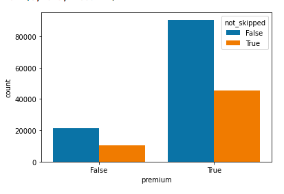
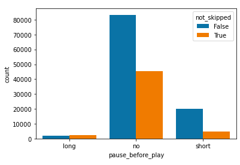
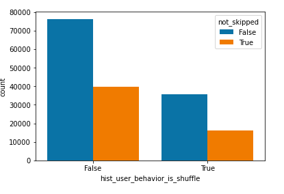

Spotify Songs Prediction
Spotify, a popular music streaming service, is an integral part of a vast major of the world's
population daily lives. Since the 2000's audio media seems to be everywhere
among our lives and Spotify in particular has become of the most widely used services.
In Spotify's case, they have found a way to create playlists which are directly created from a
user’s past
listening data. This personalized creation has been a stunning feature that many enjoy, but for
others, it may not always be the right taste in genre that users would listen to.
Even for me, there are oftentimes songs which I do not like. I wanted to explore this further
and wondered why spotify would recommend songs which I do not listen to.
Being able to recommend good songs means that users will use a platform for longer since it
matches with their preference and they will be able to enjoy the application at a further
extent.
It’s important to analyze and understand what makes Spotify’s recommender systems work and in
doing so, we also created a similar model to recommend music to users of our model as well.
We wanted to create a music prediction model that would recommend to users top songs on the top
100 songs so that songs recommended would not just be random songs that they listen to.
During the process of creating a prediction model means that we have to analyze specific trends
and features among musical pieces. Once we are able to correlate features and generalize them to
a users history, we can create a better prediction model as well.
Project Goal
Since Spotify's recommendation model was one that grabbed our attention, we wanted to break down the this existing model so that we can understand it through replication with a similar goal of creating musical recommendation to users. A limitation of the existing Spotify algorithm now is that there are times where songs which are not known widely (upcoming artist music) are recommended, we chose to use songs that are considered rather popular so that users can listen to what others are listening to as well. Not only that, but for our models sake, this allows us to create a model that is more efficient and produces quicker results. In other words, we decided to create a prediction model to recommend songs that Spotify also does, but rather from the top 100 songs today instead.
Problem Statement
In this project, I was a member among a total of 4 members where we all equally contributed. As a project member I was not very focused on the modeling side of things, but rather focused more on EDA and data analysis since this was considered one of my first projects. I spent a majority of my time learning new technologies and researched the background behind each machine learning algorithm to discuss with my team which to use for our predictions.
Data Findings
Among our analysis, songs had a variety of different features and aspects that would influence
the users preference. As shown in these barplots, pause behavior, shuffling behavior, and whether
or not users paid for the streaming service had an impact on how they listened to music. These were
also factors in how they ended up skipping songs as compared to those that listened to the song all
the way through.



We had to find out which features stood out most amongst those that listened to the same song.
This led us
to use Cosine similarity when finding songs that users may be interested in. A reason for why
Cosine similarity was used was due to the fact that our data was represented as a variety of
features. To compare this to other entries with the same features as well, we had to represent
our data as respective vectors. As our users' listening behevior was represented as features,
cosine similarity allowed us to determine which songs were closest in features to ones that
users listened to.
Used K means clustering to find clusters of songs and people that listen to other songs
Had to deal with the problem of people listening to song in a certain sequence
A problem that we ran into was that we could not connect the track id’s with a physical song name for privacy reasons. As a result, we had to work around this problem by deciphering the code that Spotify used.
Reflection
Our project ran into many problems of space and time issues, but were able to combat them over the course of the project. The issue that we initially ran into was one of accessing the dataset. This dataset contained of over 64gb of user data, which contained a variety of information on a number of different users and music features. Song data was also given where there was information on bounciness, acousticness, beats, etc. All this information played a factor in our model which was needed for our analysis. As a result, we had to incorporate the use of Pyspark which allowed us to sample smaller bits of our whole dataset to be used in training our model. Given more time would look into how sequence of songs being played can affect the recommendation that they get back.
View Project